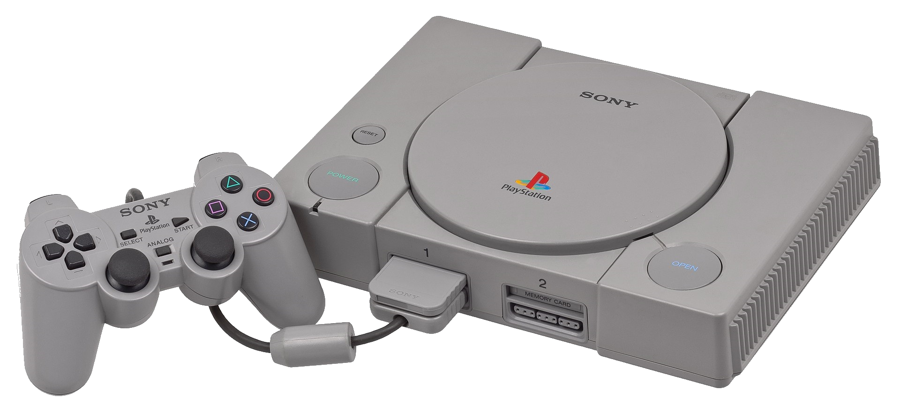

В истории компьютерных игр, эпоха 32/64-разрядных игровых систем стала пятым поколением игровых приставок.
В это время на рынке доминировали три игровые системы —
Sega Saturn (1994), Sony PlayStation (1994) и Nintendo 64 (1996).
Демография продаж этих консолей сильно различалась, но все три приставки участвовали в консольной войне той эры.
FM Towns Marty, 3DO, PC-FX и Atari Jaguar тоже были частью пятого поколения,
но их продажи были относительно невелики и не оказали значительного влияния на рынок.
В данный период вышли три обновлённые версии
Nintendo Game Boy: Game Boy Color, Game Boy Light (только в Японии) и Game Boy Pocket.
(1993—2005) 